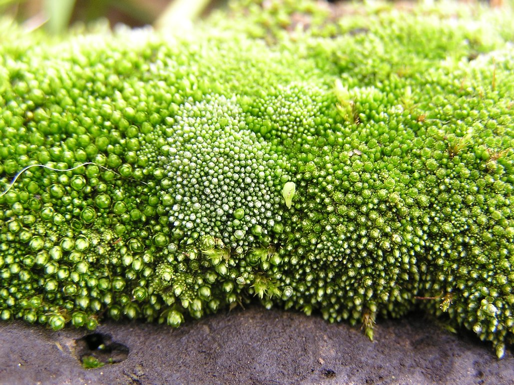

Mușchii sau briofitele, sunt plante inferioare din încrengătura Bryophyta, care cuprind aproximativ 12.000 de specii.Ei sunt răspândiți pe tot globul, începând cu zonele calde și ploioase tot timpul anului, cum este zona ecuatorială și sfârșind cu zonele caracterizate prin temperaturi extrem de scăzute, cum sunt zonele polare. În toate zonele climatice ei preferă biotopurile umede.
Mușchii au corpul vegetativ lipsit de vase conducătoare adevărate, numit tal cormoid .
Organele de reproducere sexuată, anteridia și arhegonul, sunt pluricelulare, iar ciclul vital este haplodiplofazic numit hapogetic.
Mușchii au corp alcătuit din două generații subordonate: gametofitul dominant (mușchiul propriu zis) și sporofitul mărunt.
Mușchii inferiori mai păstrează multe caractere specifice algelor. Corpul vegetativ, este un tal lamelar care se fixează în sol cu ajutorul rizoizilor monocelulari. Superioritatea față de alge o dovedește prezența epidermei la suprafața talului, a țesuturilor parenchimatice, cu rol asimilator și de depozitare. Din mușchii inferiori face parte Fierea pământului (Marchantia polymorpha) care trăiește în locurile permanent
Mușchii superiori au corpul vegetativ - un tal cormoid, format din tulpiniță, frunzulițe și rizoizi pluricelulari, care sunt analoage cu organele vegetative ale plantelor vasculare. Exemplu este Mușchiul de pământ (Politrichum commune).
1.Mușchii sporesc pătura de humus de pe stânci;
2.Protejează solul împotriva eroziunii;
3.Turba, care se formează în locurile mlăștinoase din resturile parțial descompuse ale mușchiului de turbă (Sphagnum), este utilizată ca îngrășământ organic, combustibil, material izolant.